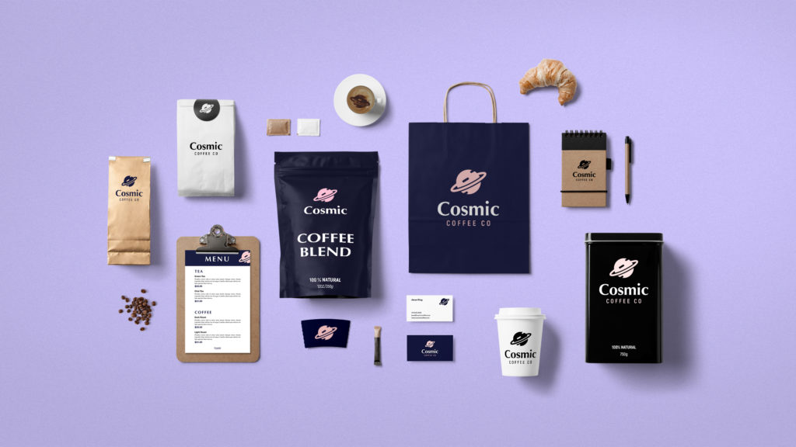
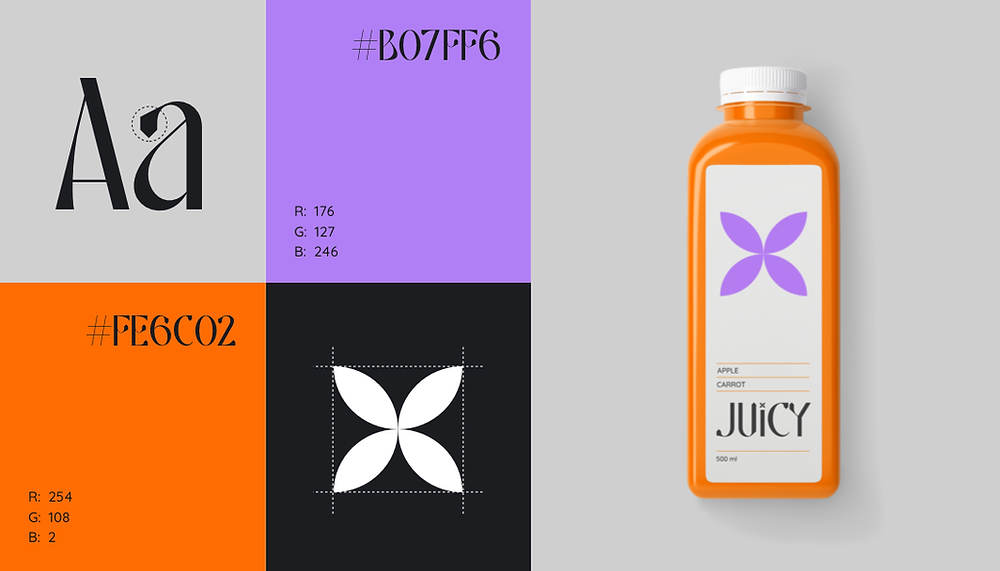
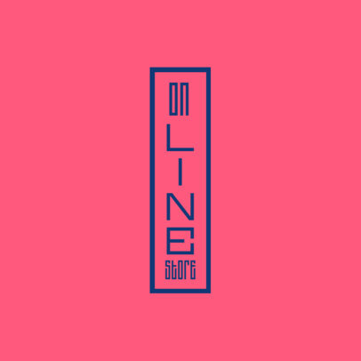
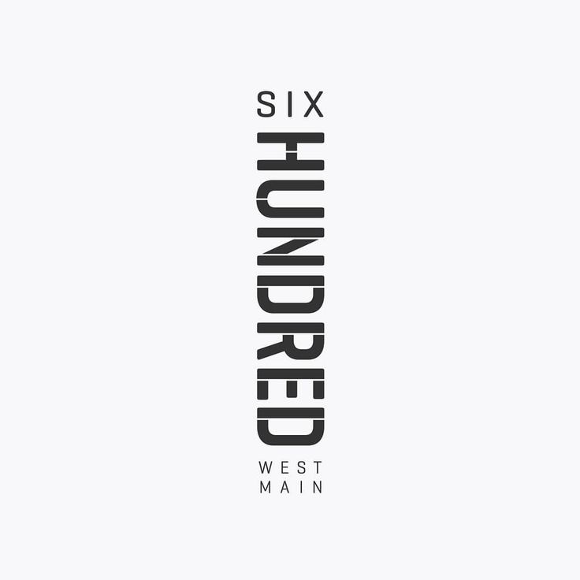
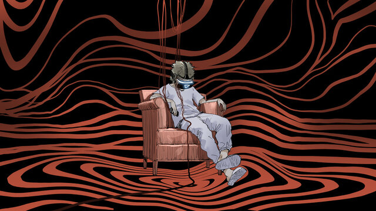

01
Фирменный стиль
Фирменный стиль
Мой любимый цвет — бирюзовый!
Создаю целостные визуальные системы, рассказывающие уникальную историю вашего бренда. От разработки логотипа до комплексных руководств по стилю — я создаю айдентику, которая находит отклик у вашей целевой аудитории и проходит проверку временем.




02
Цифровая иллюстрация
Воплощаю воображение в реальность через авторские иллюстрации. Будь то журнальная графика, дизайн персонажей или концепт-арт — я создаю визуально эффектные иллюстрации, адаптированные под нужды вашего проекта.
